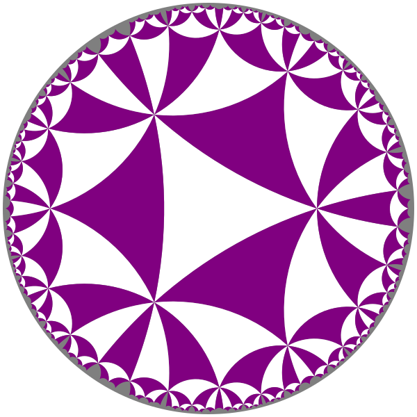
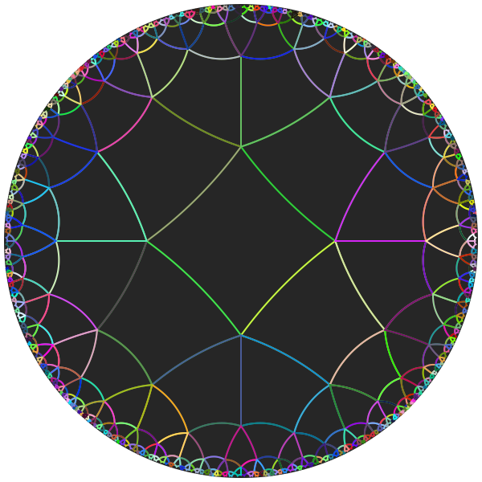
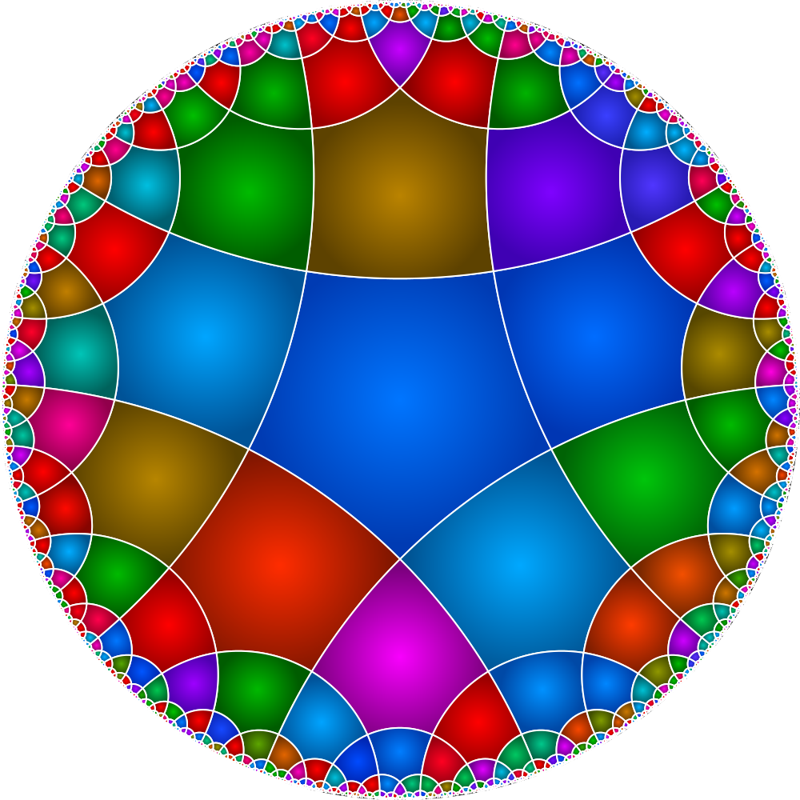
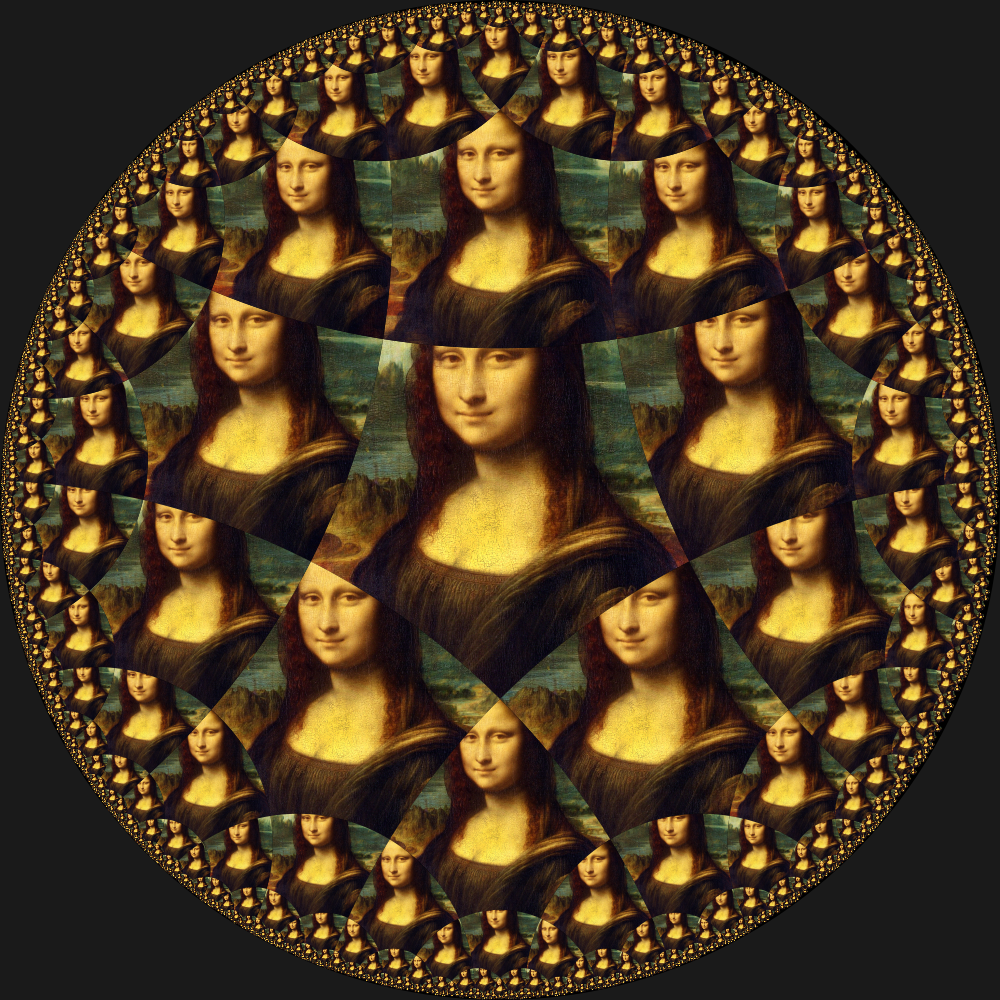
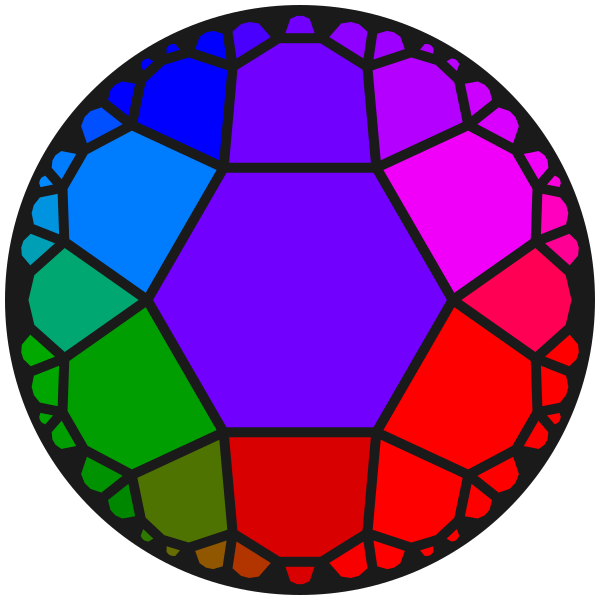
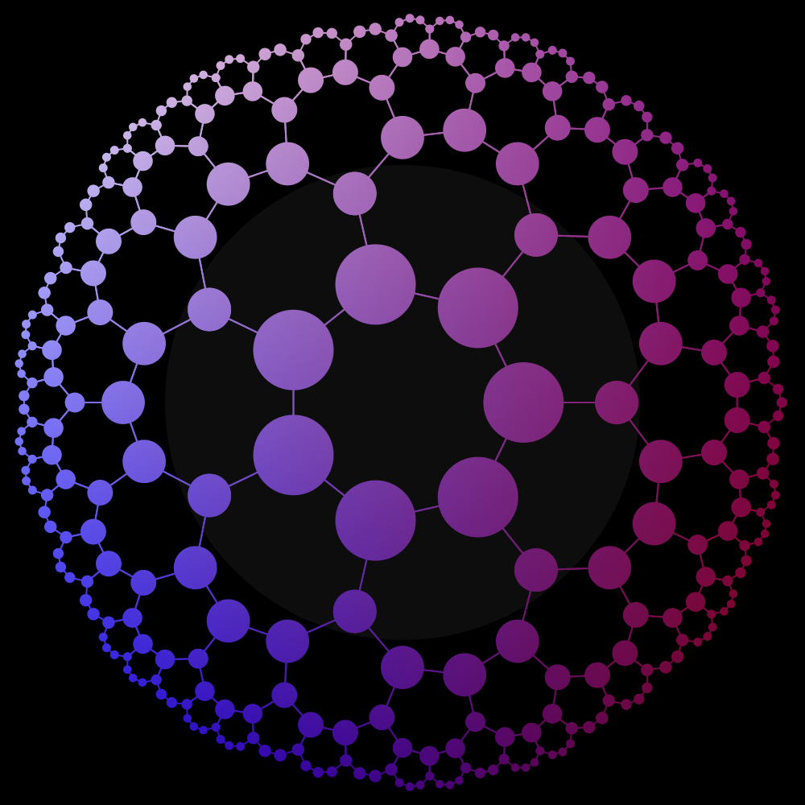

Tiling
Overview
You can use PoincareDisk.jl to tile the hyperbolic plane. As with Euclidean spaces, the tiling pattern consists of similar shapes of the same size. On the Poincaré disk, the shapes look smaller as they move further towards the edge of the disk
You use the hyperbolic_tiling(p, q) function to generate an array of the individual tiles' coordinates. Each tile is a p-sided polygon, and q lines join at each vertex.
If you wish, you can then use the provided draw_tiling() function to draw the tiles, using a simple coloring method.
Alternatively, you can write your own code that processes each of the tiles in the array using your preferred graphic styling.
The simple example
@drawsvg begin sethue("grey50") draw_poincare_disk(action = :fillstroke) tiles = hyperbolic_tiling(3, 10) # default depth is 8 draw_tiling(tiles, action=:fill, colors=["purple","white"])end
tiles is an array of tuples. Each tuple contains:
- an array of complex coordinates for the hyperbolic polygon for this tile
- a generation number (an integer), which is a record of when this tile was generated during the tile-construction process
The hyperbolic_tiling() function has a few keyword options:
depth = 8hcenter = 0.0 + 0.0imrotation = 0.0maxtiles = 4000
These let you control other aspects of the tile generation process.
The provided draw_tiling() function also provides a few keywords:
radius=DEFAULT_DISK_RADIUSdiskcenter=Oaction=:strokesteps=16colors=nothing
Tiling specifications
To define the tiling, you provide two numbers to hyperbolic_tiling(p, q), p and q. These determine the number of points in each polygon, and the number of lines meeting at a vertex. So (3, 10) in the above example made triangular tiles, tiled such that 10 lines meet at each vertex.
p and q must satisfy 1/p + 1/q < 1/2 (the hyperbolic condition).
The simpler tilings are listed in this table:
| p:q | 1 | 2 | 3 | 4 | 5 | 6 | 7 | 8 | 9 | 10 | 11 | 12 |
|---|---|---|---|---|---|---|---|---|---|---|---|---|
| 1 | ||||||||||||
| 2 | ||||||||||||
| 3 | ✓ | ✓ | ✓ | ✓ | ✓ | ✓ | ||||||
| 4 | ✓ | ✓ | ✓ | ✓ | ✓ | ✓ | ✓ | ✓ | ||||
| 5 | ✓ | ✓ | ✓ | ✓ | ✓ | ✓ | ✓ | ✓ | ✓ | |||
| 6 | ✓ | ✓ | ✓ | ✓ | ✓ | ✓ | ✓ | ✓ | ✓ | |||
| 7 | ✓ | ✓ | ✓ | ✓ | ✓ | ✓ | ✓ | ✓ | ✓ | ✓ | ||
| 8 | ✓ | ✓ | ✓ | ✓ | ✓ | ✓ | ✓ | ✓ | ✓ | ✓ | ||
| 9 | ✓ | ✓ | ✓ | ✓ | ✓ | ✓ | ✓ | ✓ | ✓ | ✓ | ||
| 10 | ✓ | ✓ | ✓ | ✓ | ✓ | ✓ | ✓ | ✓ | ✓ | ✓ | ||
| 11 | ✓ | ✓ | ✓ | ✓ | ✓ | ✓ | ✓ | ✓ | ✓ | ✓ | ||
| 12 | ✓ | ✓ | ✓ | ✓ | ✓ | ✓ | ✓ | ✓ | ✓ | ✓ |
For example, (5, 4), (7, 3), and (4, 5) are all acceptable. The 'simplest' available tiling is (3, 7), such that 7 lines connect at each of the triangles' vertices.
More examples
Instead of using the built-in draw_tiling() function, it's easy to write a few functions that process and display the tiles generated by hyperbolic_tiling(p, q). Iterate over the tiles and use hyperbolic_poly() to make suitable graphics for each polygon.
Drawing(600, 600, :svg)origin()sethue("grey15")draw_poincare_disk(action = :fill)tiles = hyperbolic_tiling(4, 5, depth=7)setline(2)for (tile, _) in tiles # don't need generation randomhue() hyperbolic_poly(tile, action=:stroke,)endfinish()preview()
The hyperbolic_poly() function returns the Luxor coordinates for the tile's border, and the default for the :action keyword is :stroke. So if you want something other than a simple stroke/fill, pass action=:none and use the returned points instead.
If you use SVG drawings, be careful as you increase the depth of the tiling - the files get very large, and the edges get very ragged, since the coordinates are so small. The steps= keyword for hyperbolic_poly might be useful to reduce some of the unnecessary detail.
The next example defines a coloured blend for each tile.
Often, when you put lots of colours close together, it's a good idea to put a small visible gap between adjacent colours (such as a white line). This avoids upsetting the viewer's eyes.
using PoincareDiskusing Luxorusing Colorsfunction lighten(col::Colorant, f) c = convert(RGB, col) return RGB(f * c.r, f * c.g, f * c.b)endfunction blend_render(pts, color::Luxor.Colorant; action=:stroke) cpt = polycentroid(pts) d = min(boxwidth(BoundingBox(pts)), boxheight(BoundingBox(pts))) setblend( blend( cpt, 0, cpt, d / 2, lighten(color, 1.4), lighten(color, 0.7), ) ) poly(pts, action) returnendDrawing(1000, 1000, :png)origin()setline(2)# remember to define the radius according to the drawing sizedraw_poincare_disk(action = :fill, radius=500)tiles = hyperbolic_tiling(5, 4; depth = 10, hcenter = 0.0 + 0.0im, rotation = π/2, maxtiles = 4000)for (tile, _) in tiles sethue(Oklch(0.5, 0.3, rand(1:360))) pts = hyperbolic_poly(tile, radius=500, action=:none) blend_render(pts, getcolor(), action=:fillpreserve) sethue("white") strokepath()endfinish()preview()
Another way to do this is to rescale each polygon to leave a gap between adjacent tiles.
using ColorsDrawing(1000, 1000, :svg)origin()sethue("black")draw_poincare_disk(action = :fill, radius = 500)tiles = hyperbolic_tiling(3, 10, depth=10, rotation = π/2)setline(3)for (tile, g) in tiles # don't need generation pts = hyperbolic_poly(tile, action=:none, steps = 30, radius = 500) pc = polycentroid(pts) dist = distance(pc, O) sethue(Oklch(0.7, 0.6, rescale(dist, 0, boxdiagonal(BoundingBox())/2, 0, 360))) # reduce scaling as tiles get smaller polyscale!(pts, rescale(g, 1, 10, 0.97, 0.9), center=pc) poly(pts, :fill, close=true)endfinish()preview()
The next example places an image inside each tile. To rotate the image away from the vertical, we'd need to calculate the correct orientation of each tile. Well, it's on my to-do list...
img = readpng("assets/MonaLisa.png")imgside = max(img.width, img.height)Drawing(1000, 1000, :png)origin()background("grey10")sethue("black")draw_poincare_disk(action = :fill, radius=500)tiles = hyperbolic_tiling(5, 4;depth = 8,hcenter = 0.0 + 0.0im,rotation = π/2,maxtiles = 2000)for (tile, _) in tiles sethue(Oklch(0.5, 0.3, rand(1:360))) @layer begin pts = hyperbolic_poly(tile, radius=500, action=:none) translate(polycentroid(pts)) polymove!(pts, O, -polycentroid(pts)) poly(pts, :clip) scale(boxdiagonal(BoundingBox(pts))/imgside) placeimage(img, O, centered=true) clipreset() endendfinish()preview()
You don't have to use the geodesic edges of each tile. This next example uses just the tile's corners rather than hyperbolic_poly. Some tidying is required though.
sethue("grey10")draw_poincare_disk(action = :fill)setline(0.1)tiles = hyperbolic_tiling(6, 4, depth=4)for tile in tiles vertices, generation = tile shape = complex_to_point.(vertices) if !ispolyclockwise(shape) reverse!(shape) end if boxwidth(BoundingBox(shape)) < 25 continue end sl = slope(O, polycentroid(shape)) sethue(Oklch(0.5, 0.6, rescale(sl, 0, 2π, 0, 360))) poly(offsetpoly(shape, -5), :fill, close=true)end
The example uses a mesh gradient to make the image look whatever.
using PoincareDiskusing Luxorusing ColorsDrawing(1000, 1000, :png)origin()background("black")sethue("grey5")draw_poincare_disk(action = :fill)sethue("white")setline(2)tiles = hyperbolic_tiling(7, 3, hcenter = 0.000001 + 0im, depth = 4)setmesh(mesh(box(BoundingBox()), ["blue", "white", "purple", "maroon"]))setfillrule(:even_odd)for (tile, _) in tiles pc = polycentroid(complex_to_point.(tile, radius=500)) poly(complex_to_point.(tile, radius=500), close = true, :path) strokepath() d = distance(O, pc) circle.(complex_to_point.(tile, radius=500), rescale(d, 0, 500, 50, 1), :fill)endfinish()preview()